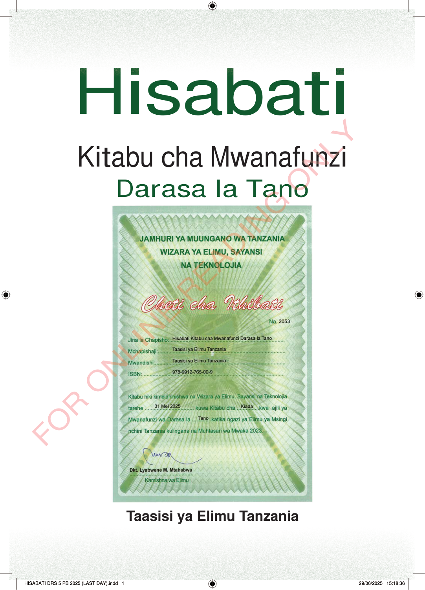

HisabatiKitabu cha MwanafunziDarasa la TanoTaasisi ya Elimu Tanzania
Hisabati
Kitabu cha Mwanafunzi
Darasa la Tano
Taasisi ya Elimu Tanzania
HisabatiKitabu cha MwanafunziDarasa la TanoCheti cha ithibati cha kitabu cha Hisabati cha Mwanafunzi Darasa la Tano kutoka Wizara ya Elimu, Sayansi na Teknolojia. Kina muhuri wa serikali, maelezo ya kitabu, na saini ya Kamishna wa Elimu.Taasisi ya Elimu Tanzania